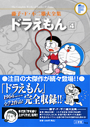

| |

定価1,680円（税込）
A5判／612ページ
好評発売中！
★は初めて単行本に収録される
作品です。
※収録内容は変更になる
場合があります。
|
★そくせきおとしあな（小一 71年04月号）
★まほうのじゃぐち（小一 71年05月号）
かげえごっこ（小一 71年06月号）
変装服（小一 71年07月号）
ドラえもんのポケット（小一 71年08月号）
手品ふろしき（小一 71年09月号）
動物キャンディー（小一 71年10月号）
そっくりクレヨン（小一 71年11月号）
クリスマスツリーの種（小一 71年12月号）
ふくわらい石けん（小一 72年01月号）
★べんきょうねまき（小一 72年02月号）
★ロケットガム（小一 72年03月号）
どこでも大ほう（小二 72年04月号）
バッジを作ろう（小二 72年05月号）
ウルトラミキサー（小二 72年06月号）
★オバケせんこう（小二 72年07月号）
お返しハンド（小二 72年08月号）
おしかけ電話（小二 72年09月号）
おせじ口べに（小二 72年10月号）
引きよせかがみ（小二 72年11月号）
人形あそび（小二 72年12月号）
薬製造機（小二 73年01月号）
まほうのひも（小二 73年02月号）
ヨンダラ首わ（小二 73年03月号）
念力目薬（小三 73年04月号）
四次元サイクリング（小三 73年05月号）
自信ヘルメット（小三 73年06月号）
ぼく、マリちゃんだよ（小三 73年07月号）
ぞうとおじさん（小三 73年08月号）
正直太郎（小三 73年09月号）
タヌキさいふ（小三 73年10月号）
オオカミ一家（小三 73年11月号）
日づけ変更カレンダー（小三 73年12月号）
走れ！ウマタケ（小三 74年01月号）
はこ庭スキー場（小三 74年02月号）
さようなら、ドラえもん（小三 74年03月号） |
帰ってきたドラえもん（小四 74年04月号）
ウラメシズキン（小四 74年05月号）
マジックボックス（小四 74年06月号）
ゆめの町ノビタランド（小四 74年07月号）
おもちゃの兵隊（小四 74年08月号）
ふろしきタクシー（小四 74年09月号）
台風発生機（小四 74年10月号）
うつしぼくろ（小四 74年11月号）
ジャイアンズをぶっとばせ（小四 74年12月号）
人間すごろく（小四 75年01月号）
名刀【電光丸】（小四 75年02月号）
人間うつしはおそろしい（小四 75年03月号）
消しゴムでノッペラボウ（小五 75年04月号）
ライター芝居（小五 75年05月号）
ぐうたらの日（小五 75年06月号）
変心うちわ（小五 75年07月号）
ろく音フラワー（小五 75年08月号）
人間ラジコン（小五 75年09月号）
いたわりロボット（小五 75年10月号）
たとえ胃の中、水の中（小五 75年11月号）
いないいないシャワー（小五 75年12月号）
弟をつくろう（小五 76年01月号）
仮病薬（小五 76年02月号）
アクト・コーダー（小五 76年03月号）
化石大発見！（小六 76年04月号）
にっくきあいつ（小六 76年05月号）
Yロウ作戦（小六 76年06月号）
正義の味方セルフ仮面（小六 76年07月号）
合体のりでハイキング（小六 76年08月号）
天気決定表（小六 76年09月号）
チューケンパー（小六 76年10月号）
からだの皮をはぐ話（小六 76年11月号）
夢まくらのおじいさん（小六 76年12月号）
ポータブル国会（小六 77年01月号）
かがみでコマーシャル（小六 77年02月号）
りっぱなパパになるぞ（小六 77年03月号） |